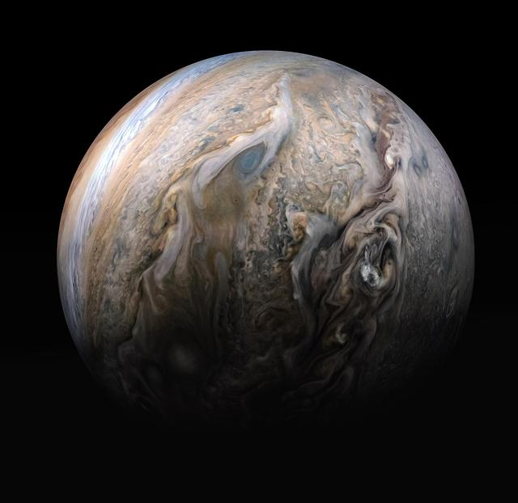
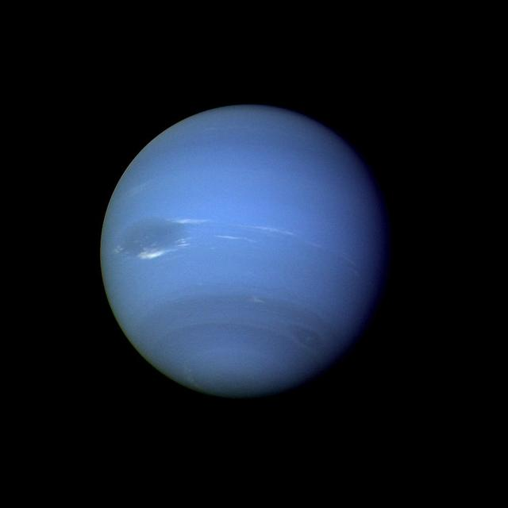

Outer Planets
Jupiter, Saturn, Uranus, and Neptune are the four giant planets of the outer solar system.
They lie beyond the asteroid belt and are far larger than the rocky inner planets. Jupiter and Saturn are gas giants made mostly of hydrogen and helium. Uranus and Neptune are ice giants, built mostly from water, ammonia, and methane. None of them has a solid surface, all four have rings, and together they host hundreds of moons.
Choose a planet below to see its facts, or use the table at the bottom of the page to compare all four.
Choose a Planet
-

Jupiter
The largest planet, with a storm bigger than Earth and more than 100 moons.
-

Saturn
The ringed planet, with bright icy rings and a moon, Titan, larger than Mercury.
-

Uranus
An ice giant that spins on its side, with a pale blue-green color from methane.
-

Neptune
The most distant planet, a deep blue ice giant with the fastest winds in the solar system.